Numeric Feature Visualizations
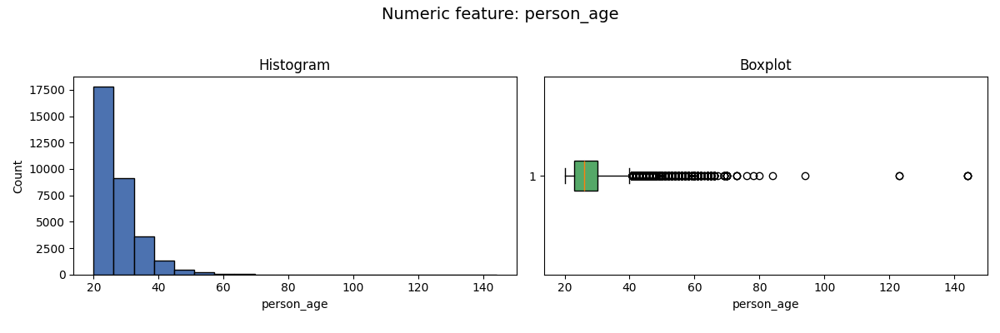
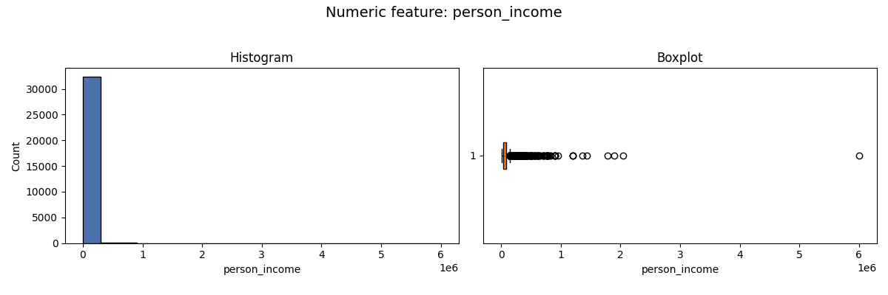
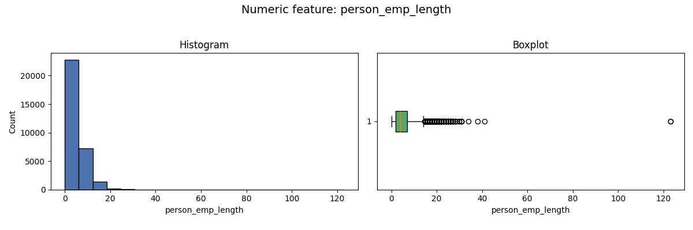
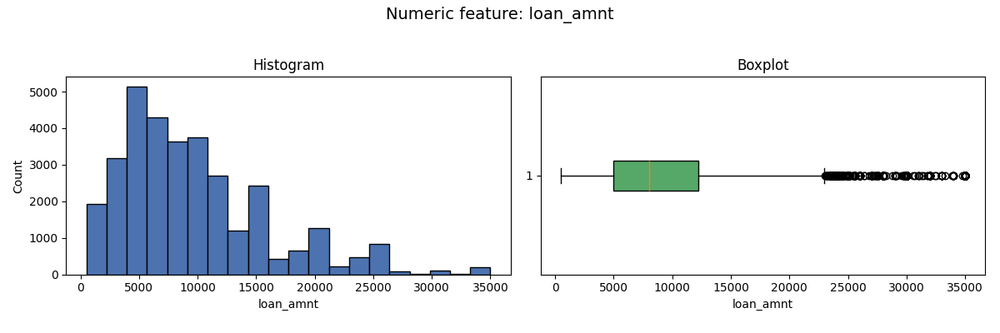
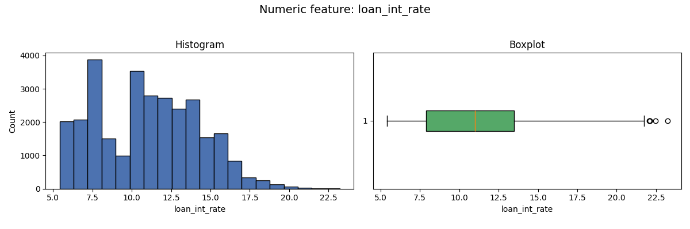

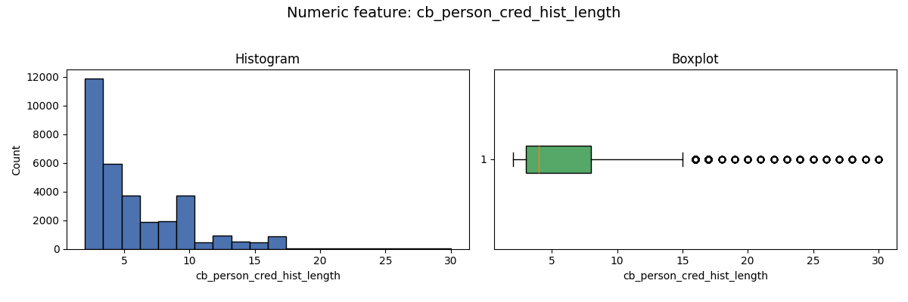
Dataset shape: 32581 rows x 12 columns
Numeric features: 7 | Categorical features: 5
| feature | count | missing | missing_pct | min | q1 | median | mean | q3 | max | std | skew |
|---|---|---|---|---|---|---|---|---|---|---|---|
| person_age | 32581 | 0 | 0.000000 | 20.00 | 23.00 | 26.00 | 27.734600 | 30.00 | 144.00 | 6.348078 | 2.581393 |
| person_income | 32581 | 0 | 0.000000 | 4000.00 | 38500.00 | 55000.00 | 66074.848470 | 79200.00 | 6000000.00 | 61983.119168 | 32.865349 |
| person_emp_length | 31686 | 895 | 2.747000 | 0.00 | 2.00 | 4.00 | 4.789686 | 7.00 | 123.00 | 4.142630 | 2.614455 |
| loan_amnt | 32581 | 0 | 0.000000 | 500.00 | 5000.00 | 8000.00 | 9589.371106 | 12200.00 | 35000.00 | 6322.086646 | 1.192477 |
| loan_int_rate | 29465 | 3116 | 9.563856 | 5.42 | 7.90 | 10.99 | 11.011695 | 13.47 | 23.22 | 3.240459 | 0.208550 |
| loan_percent_income | 32581 | 0 | 0.000000 | 0.00 | 0.09 | 0.15 | 0.170203 | 0.23 | 0.83 | 0.106782 | 1.064669 |
| cb_person_cred_hist_length | 32581 | 0 | 0.000000 | 2.00 | 3.00 | 4.00 | 5.804211 | 8.00 | 30.00 | 4.055001 | 1.661790 |
| feature | count | missing | missing_pct | unique_values | top_values |
|---|---|---|---|---|---|
| person_home_ownership | 32581 | 0 | 0.0 | 4 | RENT (16446), MORTGAGE (13444), OWN (2584), OTHER (107) |
| loan_intent | 32581 | 0 | 0.0 | 6 | EDUCATION (6453), MEDICAL (6071), VENTURE (5719), PERSONAL (5521), DEBTCONSOLIDATION (5212) |
| loan_grade | 32581 | 0 | 0.0 | 7 | A (10777), B (10451), C (6458), D (3626), E (964) |
| loan_status | 32581 | 0 | 0.0 | 2 | 0 (25473), 1 (7108) |
| cb_person_default_on_file | 32581 | 0 | 0.0 | 2 | N (26836), Y (5745) |
| feature | count | outlier_count | outlier_pct | top_outliers | method |
|---|---|---|---|---|---|
| person_age | 32581 | 90 | 0.276235 | 81:144.00, 32297:144.00, 183:144.00, 747:123.00, 575:123.00 | two-sided z test + Bonferroni correction |
| person_income | 32581 | 97 | 0.297720 | 32297:6000000.00, 30049:2039784.00, 32546:1900000.00, 32497:1782000.00, 31924:1440000.00 | two-sided z test + Bonferroni correction |
| person_emp_length | 31686 | 34 | 0.107303 | 0:123.00, 210:123.00, 32355:41.00, 32515:38.00, 32428:34.00 | two-sided z test + Bonferroni correction |
| loan_amnt | 32581 | 0 | 0.000000 | 0:35000.00, 1:1000.00, 2:5500.00, 3:35000.00, 4:35000.00 | two-sided z test + Bonferroni correction |
| loan_int_rate | 29465 | 0 | 0.000000 | 0:16.02, 1:11.14, 2:12.87, 3:15.23, 4:14.27 | two-sided z test + Bonferroni correction |
| loan_percent_income | 32581 | 14 | 0.042970 | 640:0.83, 23727:0.78, 577:0.77, 571:0.77, 18203:0.76 | two-sided z test + Bonferroni correction |
| cb_person_cred_hist_length | 32581 | 101 | 0.309997 | 32580:30.00, 32543:30.00, 32541:30.00, 32497:30.00, 32508:30.00 | two-sided z test + Bonferroni correction |
| test | status | affected_rows | details |
|---|---|---|---|
| Duplicate rows | warn | 165 | Exact duplicate rows should be reviewed before modeling. |
| Binary target validity | pass | 0 | Observed target values: [np.int64(0), np.int64(1)]; missing target rows: 0. |
| Target imbalance | pass | 0 | Default rate is 21.82%; inspect precision-recall metrics when the event class is rare. |
| High missingness columns | pass | 0 | No column has more than 20% missing values. |
| Non-negative numeric fields | pass | 0 | No negative values found in numeric fields that should be non-negative. |
| Age plausibility | warn | 5 | Borrower ages above 120 look like data-entry errors. |
| Employment length plausibility | warn | 2 | Employment length exceeds age minus 14 for some rows. |
| Credit history plausibility | pass | 0 | Credit history length is not greater than borrower age. |
| Loan percent income consistency | warn | 338 | loan_percent_income differs from loan_amnt / person_income beyond tolerance. |
| Categorical cardinality | pass | 0 | No high-cardinality categorical columns found. |
| Missingness association with target | warn | 1 | person_emp_length: p=1.462e-12 |
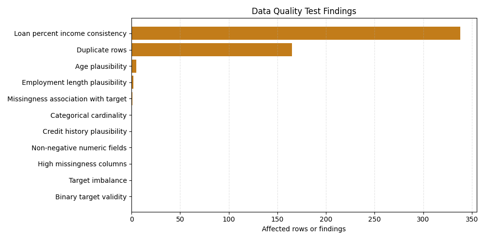
Loan grade behaves like a prepared external risk estimate. The association below is used to justify excluding it from academic models.
| feature | target | cramers_v | chi2_statistic | chi2_p_value | chi2_degrees_of_freedom | spearman_r | spearman_p_value | default_rate_range | interpretation |
|---|---|---|---|---|---|---|---|---|---|
| loan_grade | loan_status | 0.414923 | 5609.184187 | 0.0 | 6 | 0.332658 | 0.0 | 0.884811 | strong proxy-risk relationship; exclude from academic models |
| loan_grade | count | default_rate |
|---|---|---|
| A | 10777 | 0.099564 |
| B | 10451 | 0.162760 |
| C | 6458 | 0.207340 |
| D | 3626 | 0.590458 |
| E | 964 | 0.644191 |
| F | 241 | 0.705394 |
| G | 64 | 0.984375 |
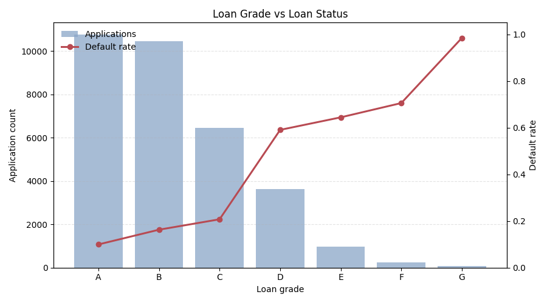






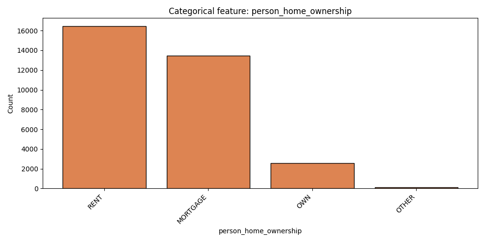
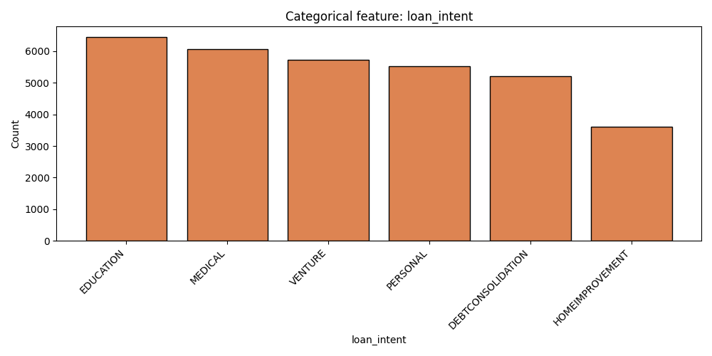

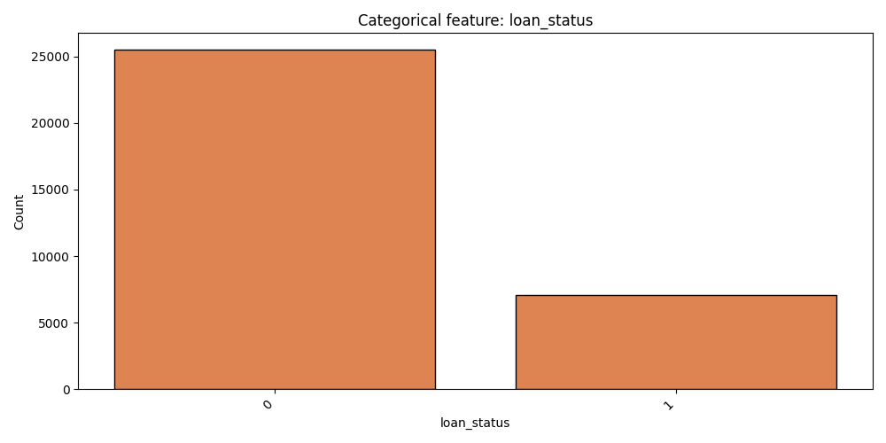
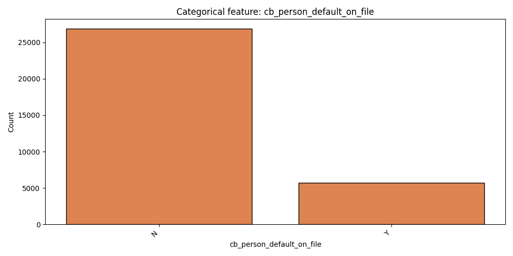